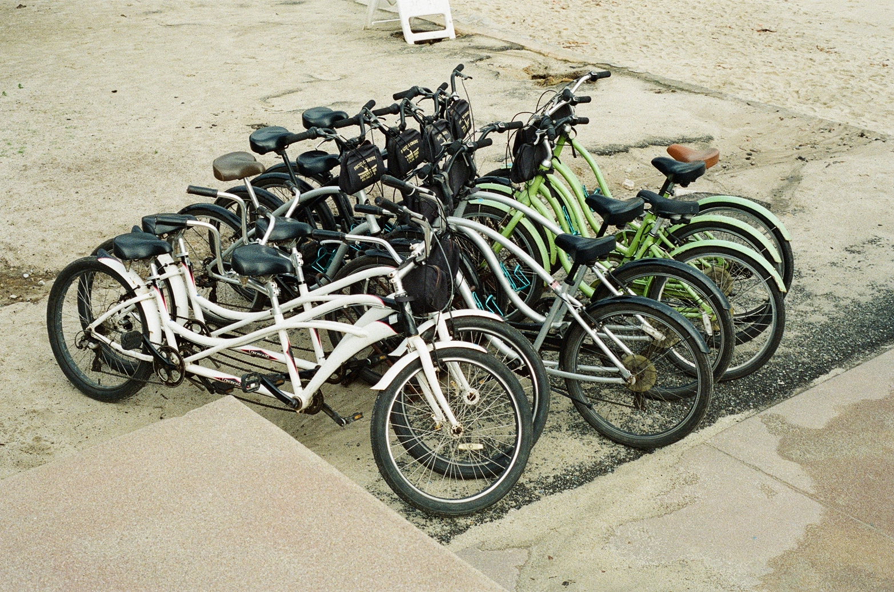
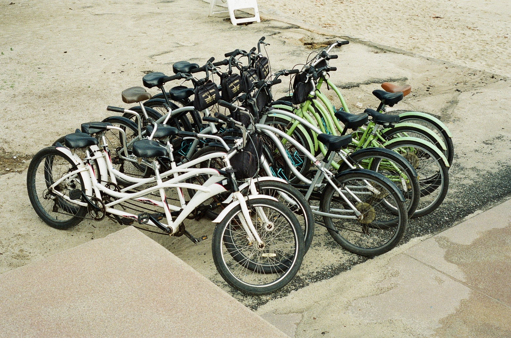

Haoxuan Ma (or Rex)
I've always been convinced that I would end up doing creative works for my life. I try to bring together all kinds of subjects that I'm interested in and create things that excite me, and bring people joy. I love game and music. In my spare time I usually play games with my friends or learn about music production and related subjects. Being able to study in multiple different fields helped me envision my different possibilities, and it also allows me to process interdisciplinarily.
 
